Synchronize your KIE Sandbox workspace with Bitbucket or GitHub
1 Introduction
KIE Sandbox now brings the possibility to synchronize your changes not only with GitHub, but also Bitbucket.
Bitbucket has several variants of their offering. Only support for Bitbucket Cloud is available, namely bitbucket.org – a publicly hosted instance. Other Bitbucket variants, being it Bitbucket Server or Bitbucket Data Center are not supported, due to significant differences in provided APIs.
Support for enterprise instances of Bitbucket Cloud will arrive in future.
2 Connecting to an account
Authorization
For KIE Sandbox to be able to communicate with a given git instance, it needs to be provided a way to authenticate with. In the case of Bitbucket, the supported way is to use a so-called App password, in the case of GitHub, its name is Personal Access Token. They are long-lasting OAuth2 tokens with selected scopes that enable the actions in KIE Sandbox when working with our workspace.
List of related OAuth2 scopes:
| Bitbucket scope | Description |
|---|---|
| account | For the initial authentication and user details retrieval (e.g., uuid of the user) |
| repository | Read access to repositories of given user. |
| repository:write | Write access to all the repositories the authorizing user has access to. |
| repository:admin | To create repositories |
| snippet | Read access to all the snippets the authorizing user has access to. |
| snippet:write | Write access to all the snippets the authorizing user can edit |
| GitHub scope | Description |
|---|---|
| (no-scope) | Implicit read access to public repositories and Gists. |
| repo | Full access to public and private repositories. |
| gist | Grants write access to Gists. |
KIE Sandbox connected accounts
Once we have a token, we need to configure the KIE Sandbox to make it available in there.
You can configure the authentication in advance by visiting the Connected Accounts section in the top panel. KIE Sandbox serves as a modal where the user needs to specify required values. In the case of Bitbucket, it is a username and the app password OAuth2 token. This is a difference compared to GitHub, where the token itself carries the user information and is sufficient for authentication on its own.
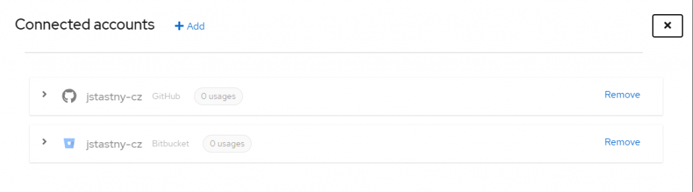
After the addition, you should see the account information together with usage statistics in your current instance of KIE Sandbox.
Once you connect the account, it’s available in your workspaces through the Authentication source section in the Share dropdown. Where you can also connect to another account by using the respective link from the dropdown, which serves as a shortcut to the Connected Accounts section mentioned earlier.
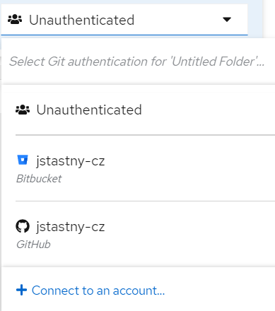
3 Collaboration is key (KIE)
It’s always better to share. And with KIE Sandbox sharing is as easy as a single click to synchronize your changes with the remote location.
KIE Sandbox does not aspire at replacing the interaction with the existing git tools or git vendor UI, rather it simplifies most common operations vital for the smooth experience when modelling your assets.
Collaborate over an existing repository
The ability to import projects and later synchronize your local changes back into the original location makes KIE Sandbox collaborative experience a breeze.
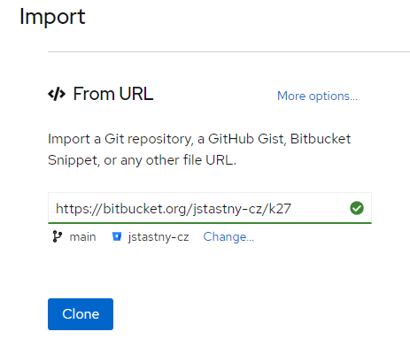
Import from URL
It all starts with a URL. You can import existing projects on KIE Sandbox main screen by pasting their respective URL into the From URL widget. Once it’s confirmed as supported, the widget itself queries git-related information to be used and presents it to the user allowing to override the identified defaults, e.g., to change a branch to be checked out (click Change… if you want to do so).
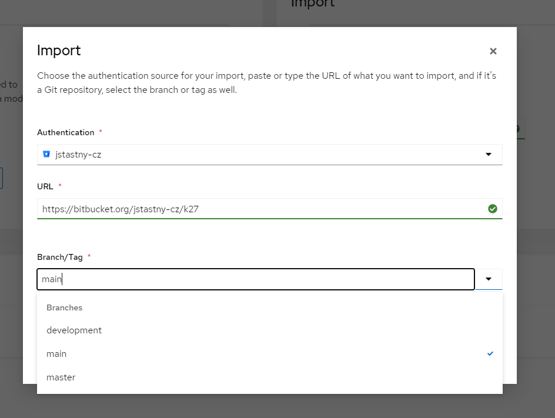
After the project is imported, you’re taken into its workspace which is readily configured with the respective Authentication source, so you’re ready to Push or Pull without any further action.
Supported import URL options
| Hostname | URL Context |
| bitbucket.org | /:workspace/:repo /:workspace/:repo/src/:tree /:workspace/:repo/src/:tree/:path /:workspace/workspace/snippets/:snippet_id/:snippet_name /:workspace/workspace/snippets/:snippet_id/:snippet_name#file-:path /snippets/:workspace/:snippet_id/:snippet_name.git |
| github.com | /:org/:repo /:org/:repo/tree/:tree /:org/:repo/tree/:tree/:path* |
| raw.githubusercontent.com | /:org/:repo/:tree/:path* |
| gist.github.com or gist.githubusercontent.com | /:user/:gistId/ /:user/:gistId/raw/:fileId/:fileName /:gistId |
Sharing local projects with the world
Having created a complex project including several models, now you wonder how to get those to your colleagues? No need to download and send by email, just create a brand-new git repository based on your workspace contents. By picking a different Authentication source, you can select between all your connected git vendor accounts.
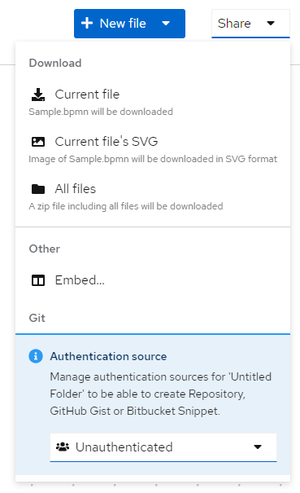
Pick an authentication source
The first step is to decide which Authentication source we’d like to use to share our workspace. Choice defines the actions allowed with the workspace further on.
Editor toolbar reflects this decision in its Share dropdown, where only actions applicable to your setup are available upon Authentication source selection.
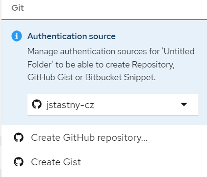
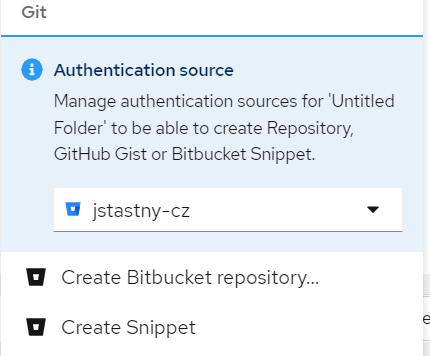
Once you pick any of these options, your project is transformed into git-based workspace. Though there are some differences in how you can synchronize the contents, see them described below.
Create a git repository
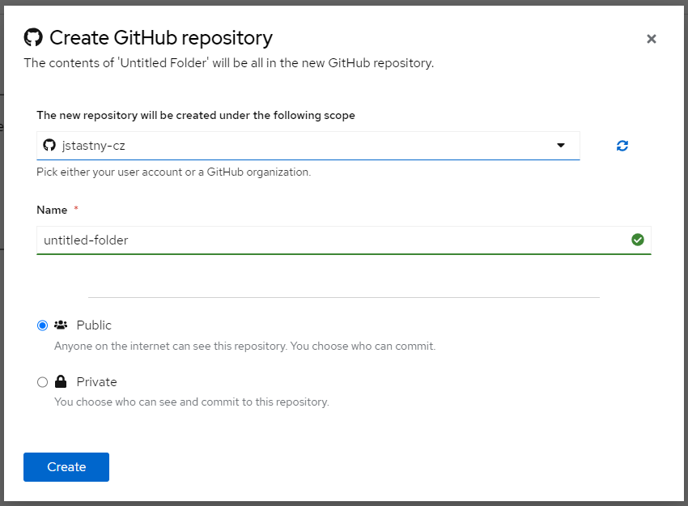
Create a repository by clicking on the respective button provided in the Share dropdown. Afterwards a modal appears where you can specify an intended location, repository name, and its visibility.
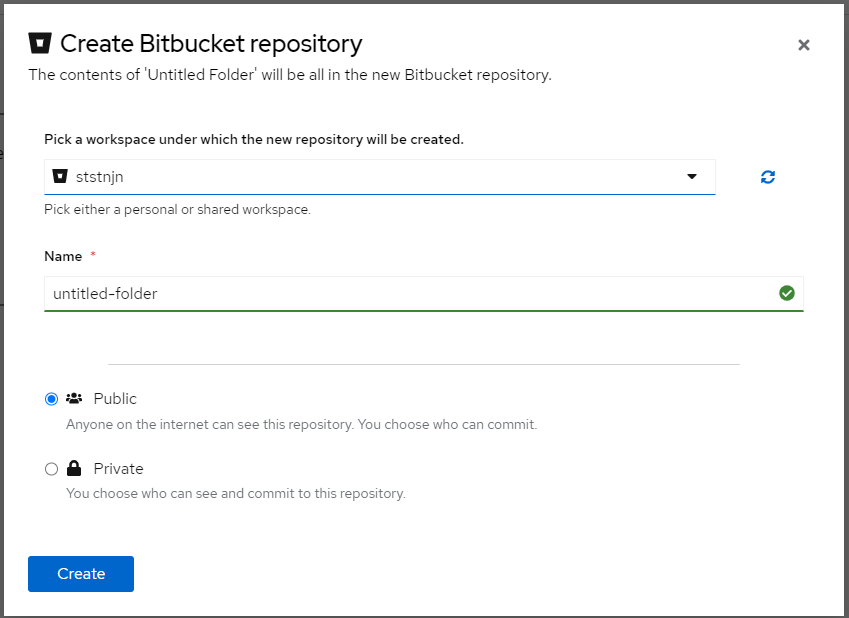
Location must be specified using a dynamically populated select field. The list of options is possible to be reload using the sync icon to its right.
In the case of GitHub, we can choose between creating the repository under our user location and creating in a GitHub organization that we are members of.
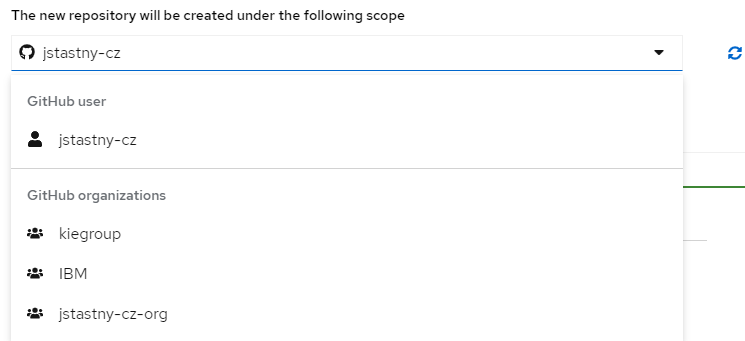
In the case of Bitbucket we select from either personal or shared workspaces.
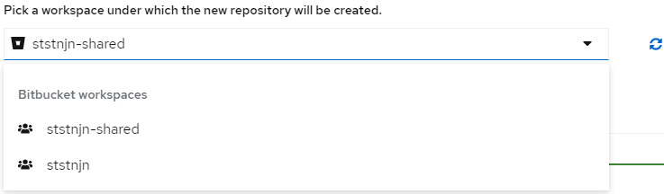
The repository name text field is populated with the value matching your workspace name, so if you’ve configured your workspace thoroughly, you should be all set. Though you are free to specify the name that suits your needs, with just a few limitations on the characters allowed guarded by validation.
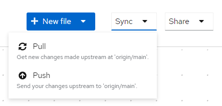
The Public and Private checkboxes define the repository visibility.
After the repository is created, you’re taken back into workspace, which is readily configured with the respective Authentication source, so you’re ready to Push or Pull without any further action.
Create a Bitbucket Snippet or GitHub Gist
Do you hesitate to create a separate repository for something you were just doodling? Then share it just as a Bitbucket Snippet or GitHub Gist. Both these options provide you with the ability to push or pull changes, share by URL, etc.
After clicking the respective button, a new Modal dialog is displayed.
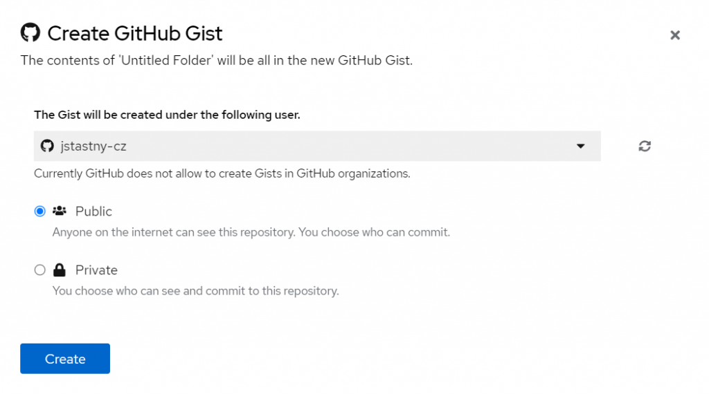
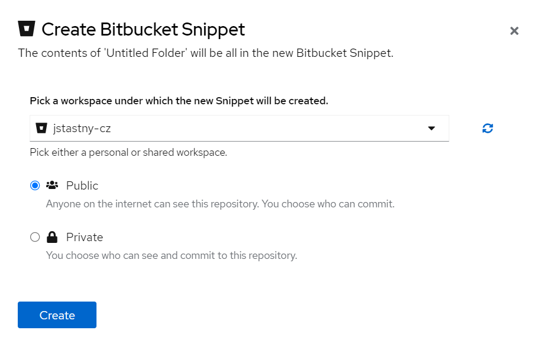
We must specify
- a location under which the item will be created.
- In the case of GitHub Gist, the only option is the user account itself, it is not supported by GitHub to create a Gist in an organization. The select field is thus displayed as disabled.
- On the other hand, Bitbucket allows us to create Snippets generally in any workspace, as long as we have necessary permissions.
- Visibility of the item being created.
After confirming the dialog, the modal stays displayed until the operation is completed. After that notification alert with the newly created item is displayed.
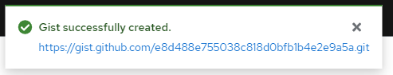
When the creation succeeds, you’re taken back into the workspace, which is now configured accordingly.
In comparison to the regular git repository Sync options above, you now have just a single operation listed there – update.
This action allows you to promote the changes back into the original location.
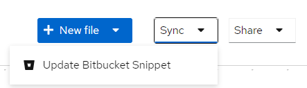
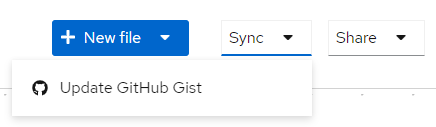
There is no choice to pull, i.e., update your workspace based on changes done either in Gist or Snippet. If you need a more flexible approach, let’s head for the following section.
Turn Gist or Snippet into a regular git repository
Working with a Snippet or Gist and you’re finally satisfied with the models? Or do you want a more flexible workflow requiring updating your workspace with remote changes?
Turn your project into a regular git repository – the Share dropdown option is still there for Gist or Snippet–based workspaces. You’re not even limited to the same Authentication source here, e.g., for a GitHub Gist based workspace, you can easily share it as a Bitbucket repository afterwards, given that you have both accounts connected.
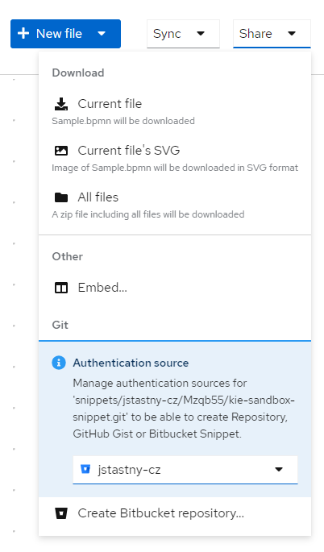
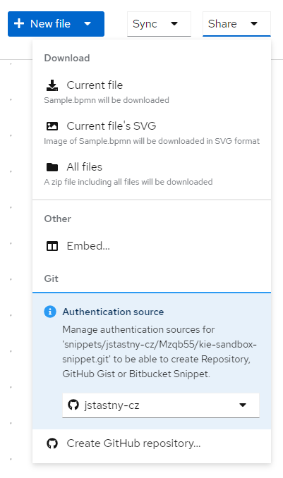
Summary
- ✅We’ve seen how users can integrate KIE Sandbox into their git-based workflow.
- 💥KIE Sandbox now supports GitHub and Bitbucket Cloud.
- 💥Toolbar buttons now reflect the currently selected Authentication provider.
- 💥GitHub Repositories can also be created in GitHub organizations.